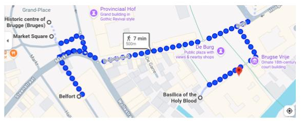
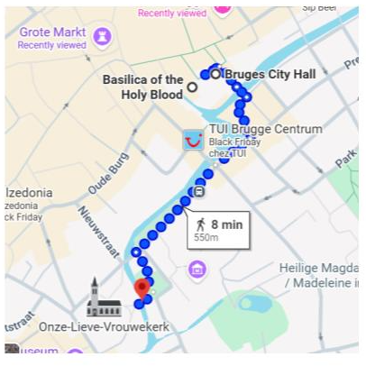

Brujas

-
Centro histórico de Brujas:
declarado Patrimonio de la Humanidad.
Un laberinto de calles adoquinadas, casas medievales y canales espectaculares
que crean el escenario perfecto para las mejores fotos.
La mayoría de los puntos turísticos se encuentran en esta zona,
ubicada a solo 10 minutos a pie desde la estación.
Es muy fácil llegar y muy fácil perderse disfrutando del paseo.
-
Grote Markt:
la plaza principal de Brujas y punto central del recorrido.
Todos los caminos conducen acá, así que la vas a cruzar varias veces.
Está rodeada por edificios históricos como el Consejo Provincial,
el Belfort y casas gremiales del siglo XVII,
que hoy funcionan como cafés, bares y restaurantes,
llenando la plaza de vida y movimiento.
-
Belfort de Brujas:
torre campanario de 83 metros,
símbolo máximo de la ciudad.
Construida entre los siglos XIII y XIV.
Si te animás a subir sus 366 escalones,
vas a disfrutar de vistas panorámicas increíbles de Brujas.
-
Plaza De Burg y Basílica de la Santa Sangre:
iglesia gótica del siglo XII.

-
Ayuntamiento de Brujas:
edificio gótico del siglo XIV,
considerado una obra maestra de la arquitectura medieval.
-
Puente de San Bonifacio:
uno de los puentes más nuevos de la ciudad,
ubicado junto a la Iglesia de Nuestra Señora
y el Palacio de Gruuthuse.
-
Tiendas de chocolate:
- Pralinette: el templo del chocolate.
-
Spegelaere Chocolaterie:
ambiente más local y menos turístico.